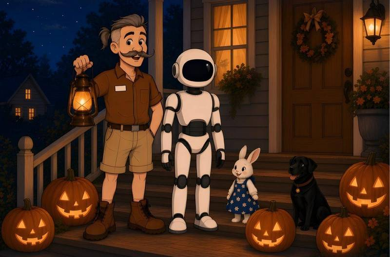
在线阅读
佩波先生和一点也不吓人的夜晚
万圣节特别篇
万圣节的晚上，安静小街上的小房子前，一排友好的南瓜亮着笑脸。就在这时，外面传来一个声音：咚咚，咚咚！佩波先生举起他的小灯笼，和露娜、Howie、小樱一起去看看那是什么。答案是全世界最不吓人的东西。这是一个温馨、温柔的万圣节睡前故事：大家一起勇敢，一起数南瓜，然后慢慢进入梦乡。
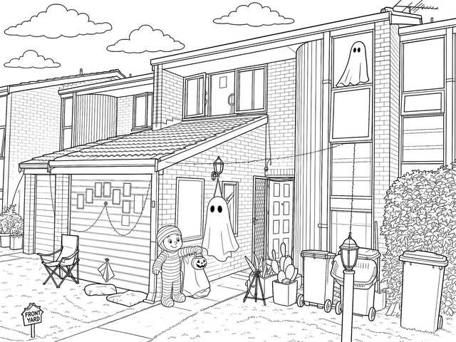
第 1 页
万圣节的晚上，安静的小街上有一座红砖小房子。
紫色的小彩灯沿着砖墙一闪一闪，车库旁边的旧灯笼发出柔柔的金光。
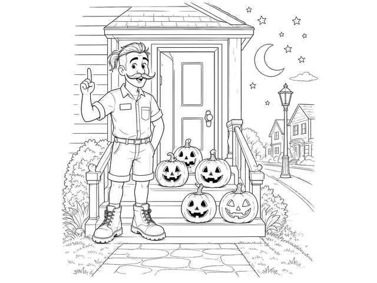
第 2 页
佩波先生刻了一排友好的南瓜，每个南瓜都露出温暖、亮亮的笑脸。
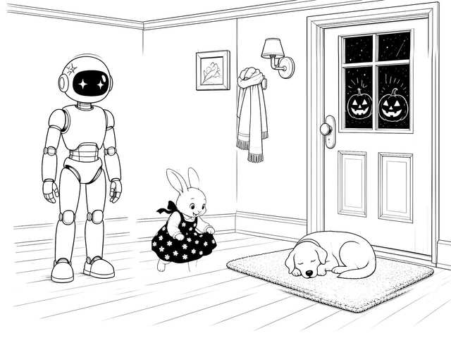
第 3 页
善良的机器人露娜让面罩上的小灯闪了闪。小Howie把她那条藏青色的雏菊小裙子抚平。小樱蜷在门边的椅子上。
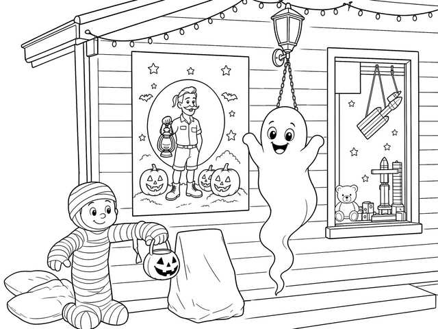
第 4 页
窗户里，玩具火箭静静地挂着，指向天上的星星。
墙上，佩波先生的海报对着大家微笑。
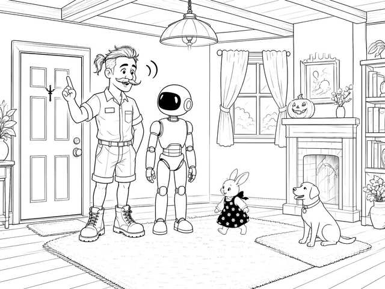
第 5 页
就在这时，外面不知从哪儿传来一个声音。
咚咚。咚咚。
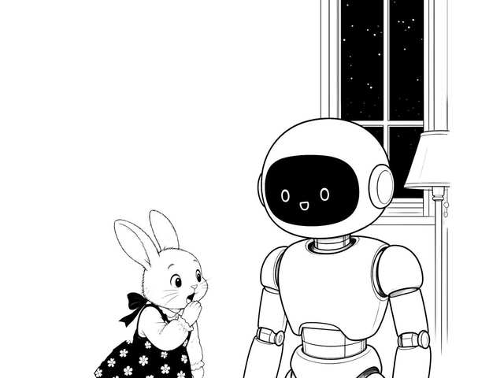
第 6 页
Howie的耳朵一下子竖了起来。“那是什么？”她小声问。
露娜面罩上的小灯慢慢地眨了眨。“我不知道。”她说。
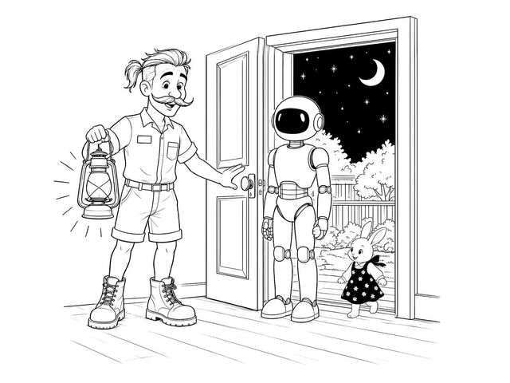
第 7 页
“我们一起去看看吧。”佩波先生温柔地说。他拿起他的小灯笼，走到了门廊上。
大家都待在门廊栏杆安全的这一边，紧紧挨在一起，就像平时一样。
咚咚，声音又响了。咚咚。
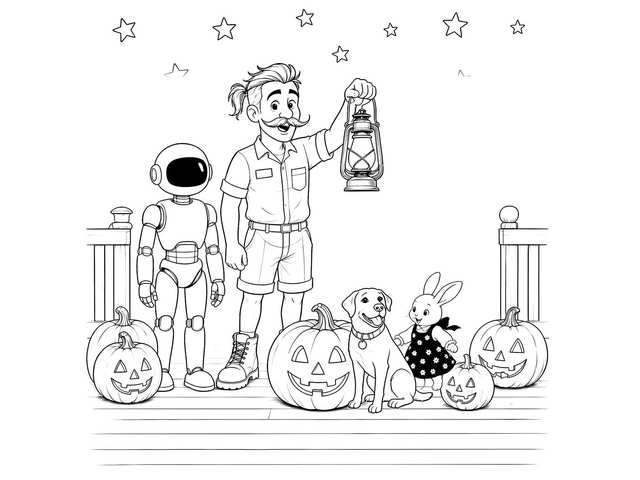
第 8 页
佩波先生把灯笼举得更高了一点。就在最大的南瓜旁边，原来是……小樱！
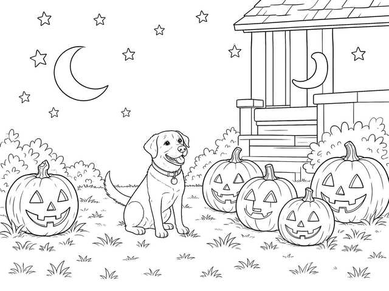
第 9 页
她悄悄从椅子上溜了下来，想和发光的南瓜坐在一起。她一开心，尾巴就摇呀摇呀摇，碰到了南瓜。
咚咚！
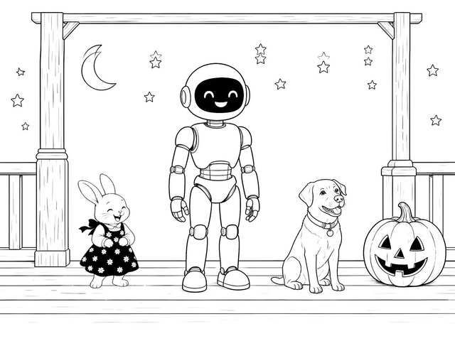
第 10 页
“原来是小樱的尾巴呀！”Howie笑着说。
露娜面罩上的小灯开心地跳起舞来。“这是全世界最不吓人的声音。”她说。
小樱又用尾巴敲了一下，好像在给大家表演。咚。
佩波先生轻轻地挠了挠她的耳朵后面。“真乖。”他说。
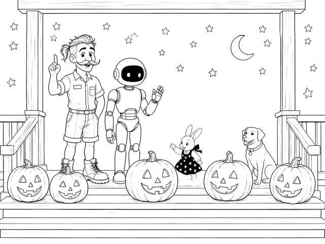
第 11 页
露娜看着发光的南瓜。“我可以数一数它们吗？”她问。
“当然可以。”佩波先生说。
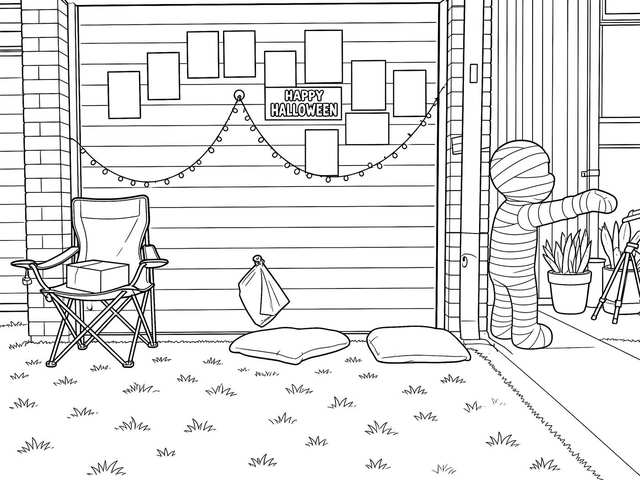
第 12 页
露娜慢慢地数，一个南瓜接着一个南瓜。每看到一张笑脸，她面罩上的小灯就闪一下。
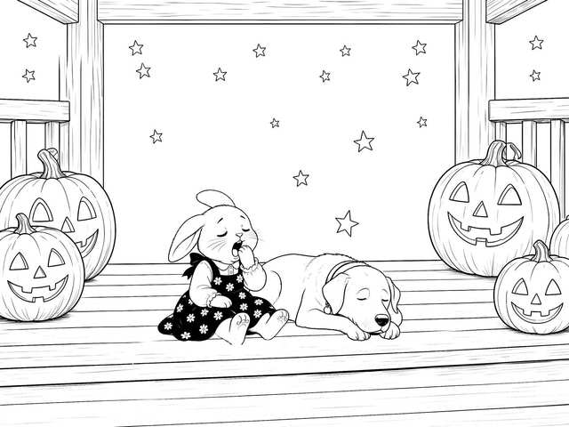
第 13 页
Howie打了一个大大的、困困的哈欠。小樱把下巴搁在爪子上。
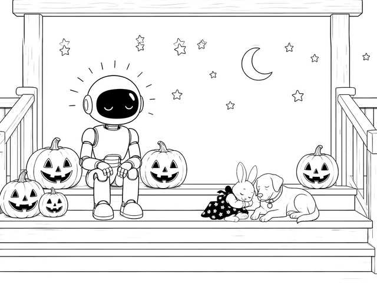
第 14 页
数到最后一个南瓜时，露娜面罩上的小灯已经变得暗暗的、暖暖的，像一盏小小的夜灯。
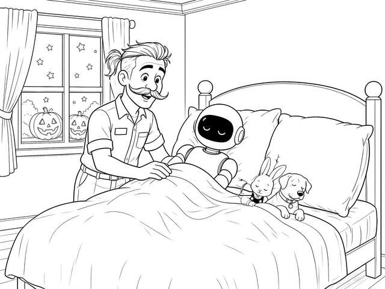
第 15 页
佩波先生把大家抱回屋里，给他们盖好被子。屋外，紫色的小彩灯一闪一闪，窗户里的火箭守护着这条小街。
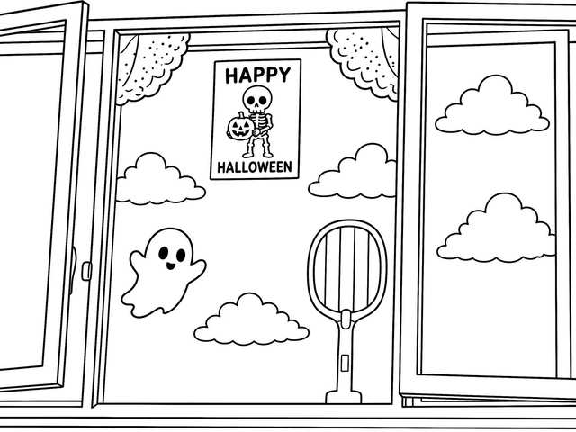
第 16 页
“晚安，南瓜们。”他轻声说。“晚安，朋友们。万圣节快乐。”
故事讲完啦。祝你好梦。
随心付费，没有上限。